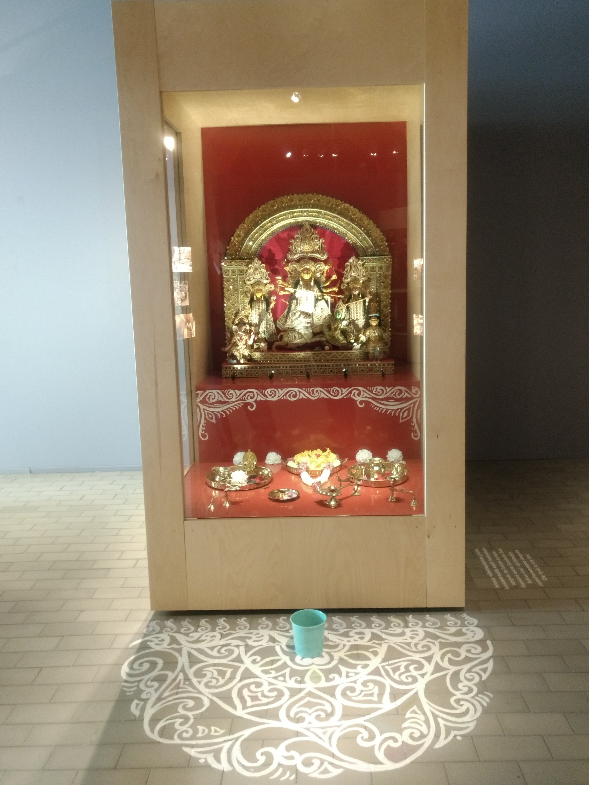

We are a small community representing Bengalis in Finland. We organize several cultural events throughout the year (See below). You are welcome to join us!
Upcoming Events 2017
| Event | Dates |
|---|---|
| Bijoya Sammilani | October, 2017 |
| Durga Puja | 29.09 - 1.10.2017 |
| Rabindra Jayanti | 09.05.2017 |
| Poila Boishakh | 14.04.2017 |
Dear All, As has become a tradition, this year too we will publish the annual magazine ''Srijan'' during Helsinki...
Posted by Sarbajanin Durga Puja, Helsinki on Wednesday, 23 August 2017
Special Mention :
Durga Maa at Helinä Rautavaaran Museum

An idol of Maa Durga is currently on display at the Helinä Rautavaaran museo (museum) in Espoo. This idol was used during earlier Durga Puja celebrations and later donated for the museum's collection. The exhibit also includes a traditional Indian, hand-painted motif at the front that can be coloured by visitors.
The museum will, in the near future, add a virtual reality film on how Durga Puja is celebrated in Helsinki. Filming for this purpose will take place during Durga Puja 2017 in Helsinki.
The museum is located at Ahertajankuja 4, Espoo.